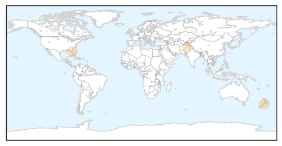
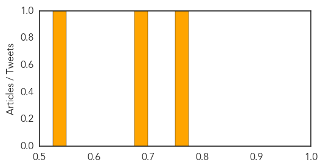
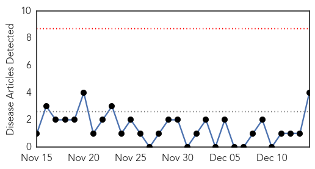
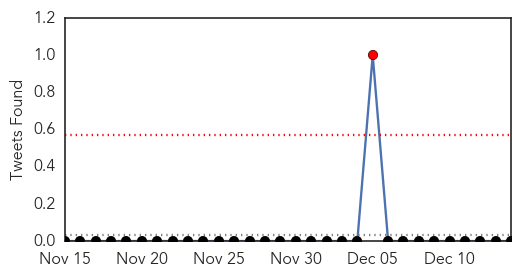
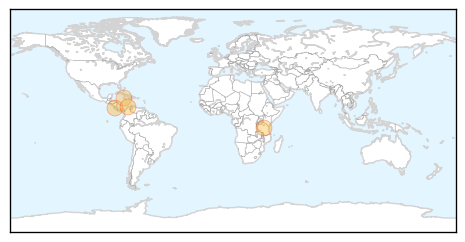
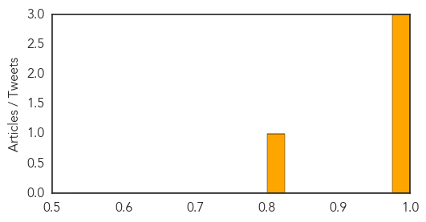

Hepatitis
30-Day Web Trend
0 alerts, 0 warnings
30-Day Twitter Trend
0 alerts, 0 warnings

Article Locations
Article Confidences
Top Articles:
Top Tweets:
-
No tweets found for Dec 14, 2014
Chikungunya
30-Day Web Trend
0 alerts, 0 warnings

30-Day Twitter Trend
1 alerts, 0 warnings

Article Locations
Article Confidences
Top Articles:
- 0.998
- Chikungunya virus surge – The Bogota Post
- 0.996
- Chikungunya in the Americas tops 1 million cases one year after being introduced
- 0.986
- Costa Rica registers 2 new cases of chikungunya virus, bringing total number to 47 -The Tico Times
- 0.812
- JAMAICA: Nine out of 10 families affected by Chikungunya
Top Tweets:
-
No tweets found for Dec 14, 2014